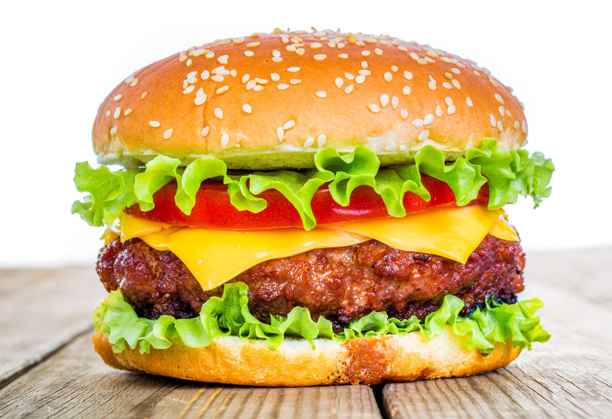

Hamburger

Description
A hamburger is an extremely popular sandwich consisting of one or more meat patties placed in a bun or a bread roll. The meat is usually accompanied by various ingredients such as tomato slices, onions, pickles, or lettuce, and numerous condiments such as mayonnaise, ketchup, or salsa.
Ingredients
- 1 pound ground lean (7% fat) beef
- 1 large egg
- ½ cup minced onion
- ¼ cup fine dried bread crumbs
- 1 tablespoon Worcestershire
- 1 or 2 cloves garlic, peeled and minced
- About 1/2 teaspoon salt
- About 1/4 teaspoon pepper
- 4 hamburger buns (4 in. wide), split
- About 1/4 cup mayonnaise
- About 1/4 cup ketchup
- 4 iceberg lettuce leaves, rinsed and crisped
- 1 firm-ripe tomato, cored and thinly sliced
- 4 thin slices red onion